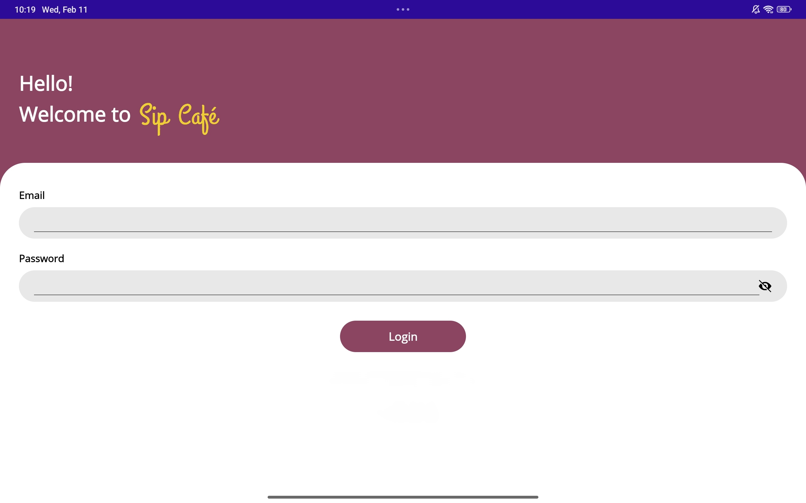

Raphael Czar A. Regis
IT Graduate · Web Developer · UI/UX Enthusiast
About Me
I am an IT graduate with internship experience in web development, IT support, and administrative tasks. During my internships, I developed responsive web pages using HTML5 and CSS3, worked with Git and GitHub for version control, and gained hands-on experience with command-line tools.
I also completed an internship where I assisted with accounting and administrative tasks by organizing sales and purchasing records, maintaining business documents, and using Microsoft Excel to support accurate reporting. This experience strengthened my attention to detail and understanding of business operations.
My capstone project is a Point-of-Sale (POS) System for Sip Cafe, where I focused on creating a practical solution for order processing and sales management.
I also developed a Teachers Portal with a connected .NET MAUI Student Portal app that uses Firebase for real-time notifications — when teachers mark a student absent, the student receives an instant notification on their mobile app.
I have a strong interest in UI/UX design, focusing on creating clean, intuitive, and user-friendly interfaces that provide an excellent user experience. I enjoy designing layouts that are both visually appealing and functional.
I'm passionate about learning new technologies, improving my software development skills, and continuously growing as an IT professional.
Skills
Programming
Tools
Other
Featured Projects



Sip Cafe POS System
A Point-of-Sale System developed as a capstone project for a café. Streamlines customer ordering, order tracking, and sales reporting with a user-friendly interface.
Teachers Portal & Student App
A complete attendance management system with a web-based Teachers Portal and a .NET MAUI Student App. Teachers can mark attendance, and students receive real-time notifications via Firebase.
Internship Experience
CTC BPO Inc.
Web Development Intern
- Developed responsive web pages using HTML5, CSS3, and JavaScript
- Used Git and GitHub for version control and collaboration
- Maintained websites and performed debugging and testing
- Assisted in improving website performance and user experience
Sebuana Global Food Corp.
IT / Accounting Support
- Organized sales and purchasing records with attention to detail
- Created Excel reports and maintained accurate documentation
- Assisted with administrative tasks and business document management
- Supported IT-related tasks and troubleshooting
UI/UX Showcase
Login Screen
Order Page
Menu Page
Reports Page
Employee View
Let's Work Together
I'm an IT graduate with practical experience in web development, UI/UX design, and mobile app development. I'm passionate about building clean, functional, and user-friendly applications. Looking for opportunities where I can contribute and grow as a developer.
Open to remote and on-site opportunities
Resume
Raphael Czar A. Regis
Download my full resume to see my complete experience, skills, and achievements.
Contact
Get in Touch
Available Now